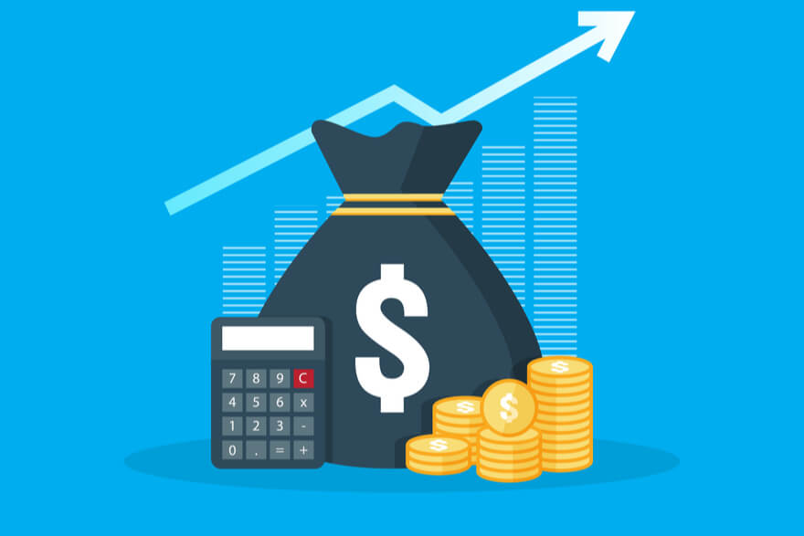

The excitement of adding a new product to your inventory can quickly be overshadowed by the worry of exactly what price you should set your products at.
Overprice, and you may price yourself out of the market and therefore won’t make any sales. Underprice, and your target audience may consider your product too cheap to be good quality – and so you still won’t make any sales. At the other extreme, you may make plenty of sales but a dismal profit which will not sustain your business!
Pricing your products is all about striking a balance, but of course, that’s often easier said than done. Understanding how to price your products is the foundation from which your business will prosper.
There is no magic formula to pricing your products because this will depend on several factors:
Every business will have a different set of answers to these key factors, but even then, how to price your products doesn’t just come down to the numbers. In fact, number-crunching is likely to be the easiest part of the whole process. It’s actually very straightforward to work out the price of your product in theory because it’s a very simple equation based on your desired profit margin (your selling price minus your costs):
You must realise that the price of your product is what will sustain your business and so a decent profit is essential. If you’re running at a loss or only ‘turning money’ (breaking even), then scaling your business is going to be a long and challenging road.
So, in theory, you will price your product taking into account your desired profit. But, how do you know that you will be able to price your product at, for example, $25 and it will sell at that price-point without difficulty?
You don’t. Not without considering all the other factors involved when you decide how to price your products.
But before you decide on your product pricing strategy – and there are a few – there’s one super important point you must look at as a priority using information that is easily accessible to you for free.
Do you regularly look up industry news, read white papers, keep track of market trends and the introduction of new or improved products? If you don’t, how will you spot patterns that may impact the demand or future sales of your product – and ultimately your pricing?
A change in the market is one of the main factors which is likely to prompt you into making a price tweak. For example, if your product is seasonal, such as summer clothing, one lousy season weatherwise will influence sales – and prices.
If you’re in the beauty niche and a specific ingredient or product is re-regulated, you may have a limited period to sell the current stock.
If your product is not environmentally friendly, you may have to make modifications to the price to appeal to the ever-evolving needs of the eco-conscious public.
Factors will always vary considerably from niche to niche, so it’s vital to be on the ball and make changes to your prices based on informed decisions derived from current market trends.
Not only should you be monitoring the market and know where it’s heading, but also your product prices on an individual basis. In other words, singularly, are each of your products profitable? This is different from looking at your profitability as a business as a whole.
Remember that your revenue goal – which is part of how you decide on your profit – should be contributed to by all products, not just one or two best sellers.
Monitoring your competitors’ prices is the easiest way to stay informed of price fluctuations which will in turn help you work out how to price your products. You don’t have to eye-ball them every day but making some necessary checks once a week is enough for you to catch any significant price changes and to investigate the reasons behind them.
You should also get feedback on your pricing from your customers regularly. Send an email, invite them to a poll or survey in exchange for a voucher or other incentive. Your real customers’ opinions count as they have already invested in your product. The bonus is that in doing this, you will also be proving that you actually care about your business, your reputation and your customers.
So, let’s assume that you have set your pricing, you’re keeping abreast of your competitors, are aware of any new to market products and your product is selling at a steady rate.
Should you raise your price – or is that a risky move?
The straight answer is that you should never be afraid to test new prices, offers or combinations (such as bundles – more on that shortly) that will potentially help you sell more products and ultimately increase your profit.
There is likely to come a period in your business that you will need to raise your prices anyway because if you don’t, you are not managing your business with any real thought for the future.
So, raise your price and test new offers every month and monitor any uptake or slow down in orders generated. You’ll see a reaction pretty quickly either way, but it’s worth noting that you’ll find price increases are accepted more readily in good economic times! What’s really interesting is that if you see your competitors increasing their prices in line with yours you know you’ve made a positive change that works!
If a particular price or offer doesn’t work – don’t panic, just try something new. Continually testing and monitoring is essential so that you remain competitive within your niche – but you also make the profit you deserve.
Understanding your market and then testing that market is the key to learning how to price your products to enable the growth of a sustainable business. By pricing your products thoughtfully and regularly tweaking, you’ll uncover the price that converts the best. Optimal returns can then be achieved by continual monitoring.